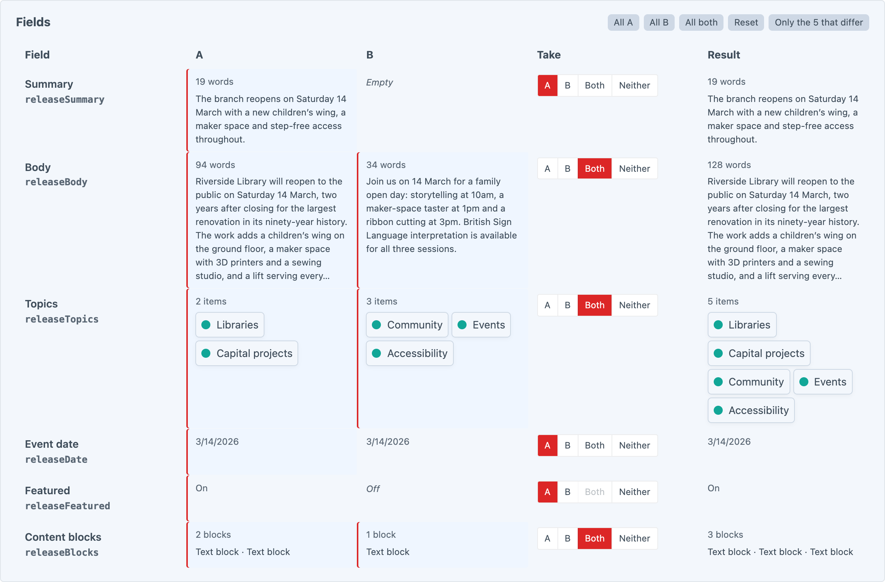
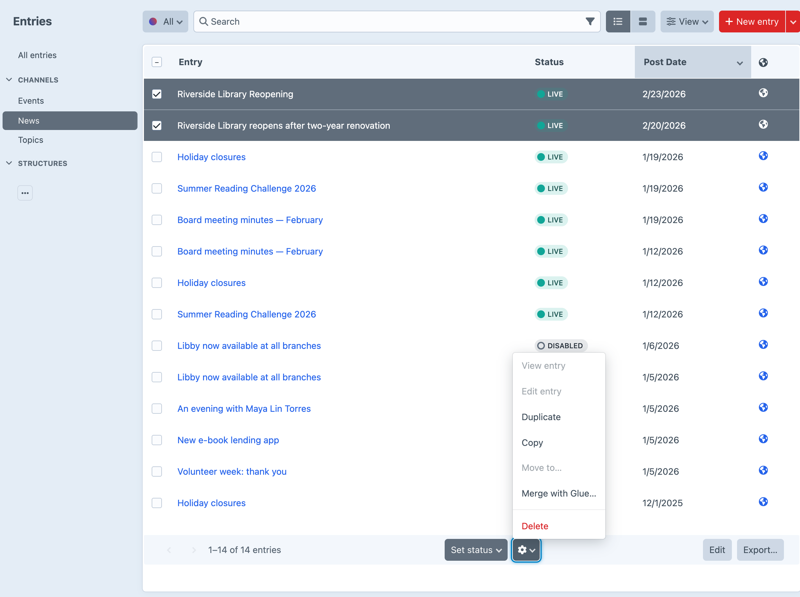
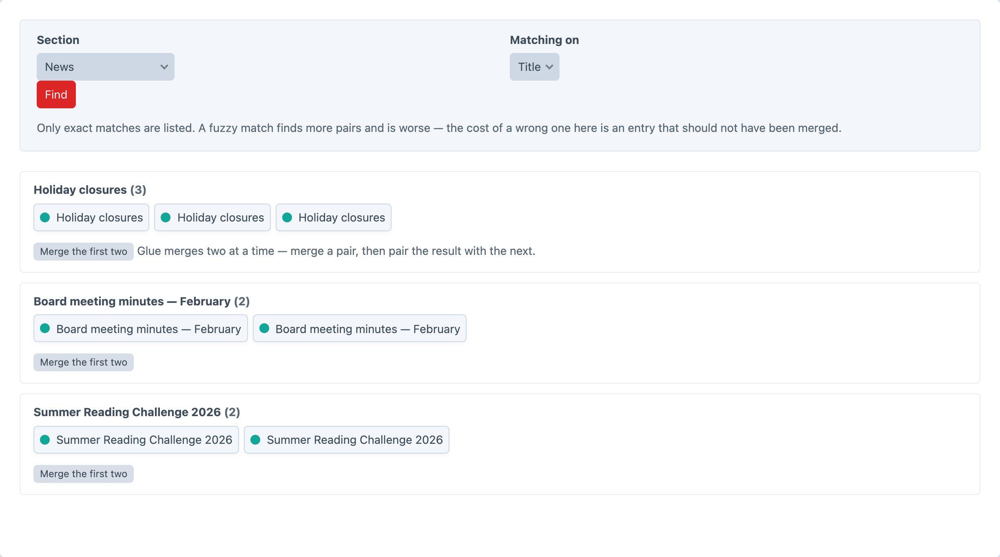
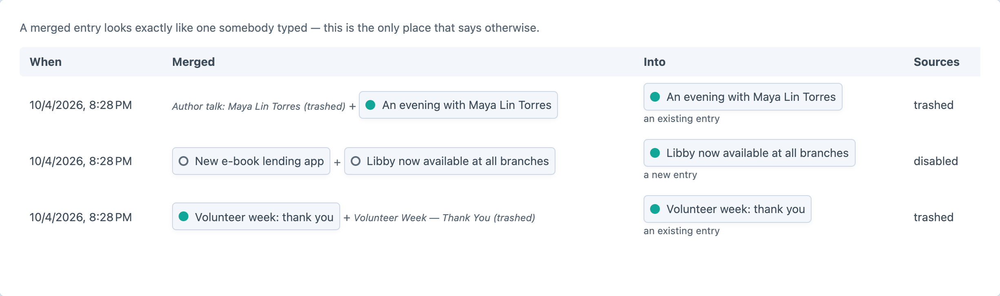

Two entries in, one entry out.
Pick a winner field by field — or take both, where both means something — and repoint everything that linked to the entry you retired.
The two entries side by side, one row per field. The Result column is the merge, run for real and not saved.

It depends on the field, and the screen says which before you pick it.
| Field | “Both” means |
|---|---|
| Entries, Categories, Assets, Tags, Users | Both lists, A’s order first, duplicates dropped |
| Checkboxes, Multi-select | Both sets of options, duplicates dropped |
| Matrix | A’s blocks, then B’s. B’s blocks are copied, not moved — B keeps its own |
| Table | A’s rows, then B’s, dropping a row identical to one above it |
| Plain text, rich text | A’s text, a separator, then B’s |
| Dates, numbers, switches, dropdowns | Nothing sensible, so it is not offered |
Every entry, category or asset that related to the retired source is re-saved to relate to the merged entry instead.
Two entries in any index, then Merge with Glue… — or let the duplicate finder list the pairs.


A merged entry looks exactly like one somebody typed. Glue records every merge, so six weeks later there is an answer.

An editor cleaning up a dozen duplicates by hand never meets a paywall. Pro is for the things that only arrive with volume.